The following pictures show n points inside a unit square so that the area A of the smallest triangle formed by these points is maximized. The smallest area triangles are shown.
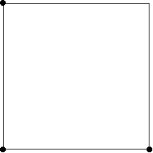 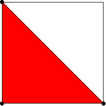 Trivial. One of an infinite family of solutions. Symmetric about a diagonal. 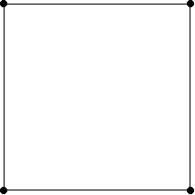 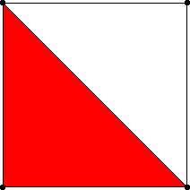 Trivial. Completely symmetric. 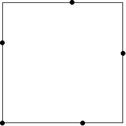 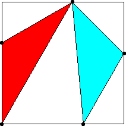 Proved optimal by Yang Lu, Zhang Jingzhong, and Zeng Zhenbing, 1991. Symmetric about a diagonal. 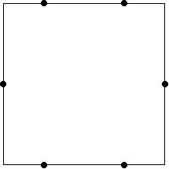 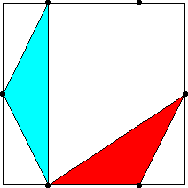 Proved optimal by A. Dress, L. Yang, and Z. B. Zeng, 1995. One of an infinite family of solutions. Vertically and horizontally symmetric. 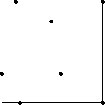 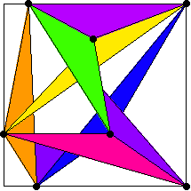 Found by F. Comellas and J. Yebra, December 2001. Proved optimal by Zhenbing Chen and Liangyu Chen, 2011. Not symmetric. 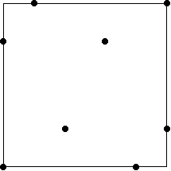 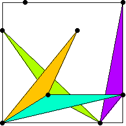 Found by F. Comellas and J. Yebra, December 2001. Proved optimal by L. Dehbi and Z. Zeng in 2022. 180o Rotationally symmetric. 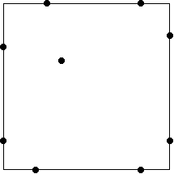 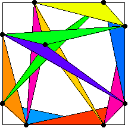 Found by F. Comellas and J. Yebra, December 2001. Proved optimal by Nathan Sudermann-Merx in March 2026. Symmetric about a diagonal. 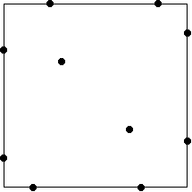 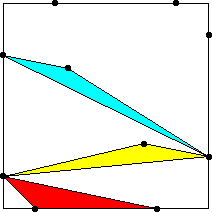 Found by F. Comellas and J. Yebra, December 2001. Symmetric about both diagonals. 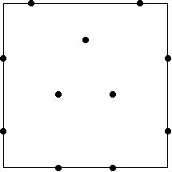 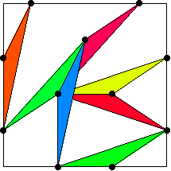 Found by Michael Goldberg, 1972. Horizontally symmetric. 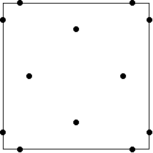 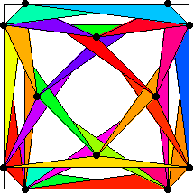 Found by F. Comellas and J. Yebra, December 2001. Completely symmetric. 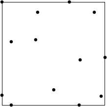 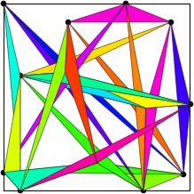 Found by Peter Karpov, August 2011. Not symmetric. 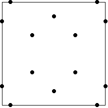 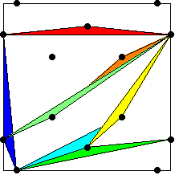 Found by Mark Beyleveld, August 2006. Symmetries of a rectangle. 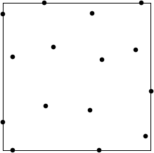 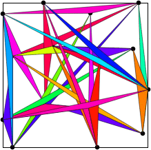 Found by Peter Karpov, August 2011. Not symmetric. 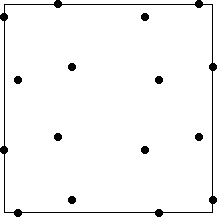 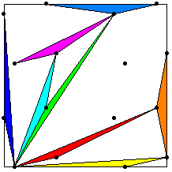 Found by Mark Beyleveld, August 2006. 180o Rotationally symmetric. 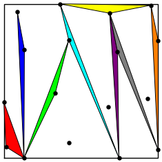 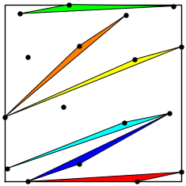 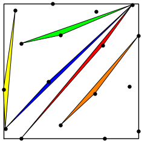 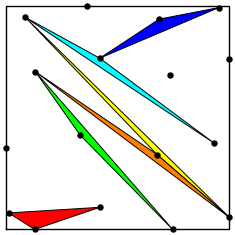 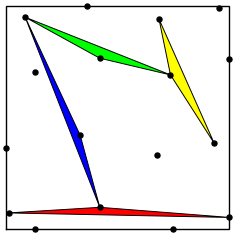 Found by Tej Stead, July 2026. Not symmetric. 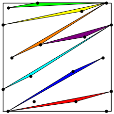 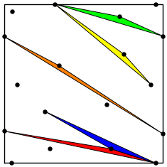 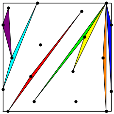 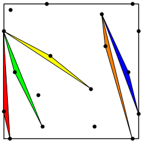 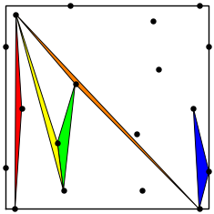 Found by Tej Stead, July 2026. Not symmetric. 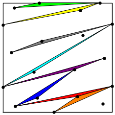 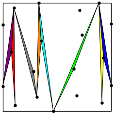 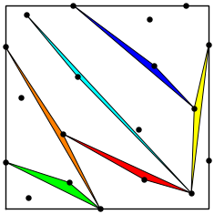 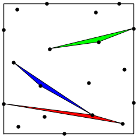 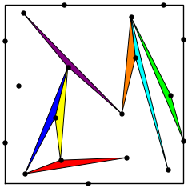 Found by Tej Stead, July 2026. Not symmetric. 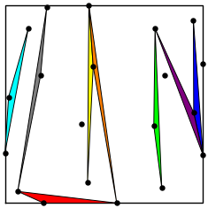 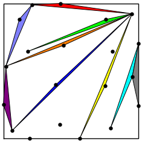 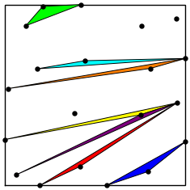 Found by Tej Stead, July 2026. Not symmetric. 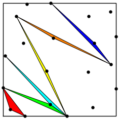 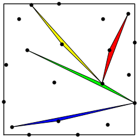 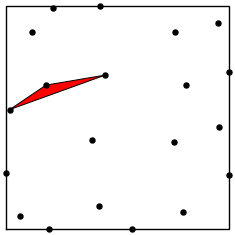
3.
A = 1/2 = .500
4.
A = 1/2 = .500
5.
A = √3 / 9 = .192+
6.
A = 1/8 = .125
7.
A = .0838+
8.
A = (√13–1) / 36 = .0723+
9.
A = (9√65–55) / 320 = .0548+
10.
A = .0465+
11.
A = 1/27 = .0370+
12.
A = .0325+
13.
A = .0270+
14.
A = .0243+
15.
A = .0211+
16.
A = 7 / 341 = .0205+
17.
A = .016481+
18.
A = .014432+
19.
A = .012677+
20.
A = .010856+
More information is available at Mathworld.